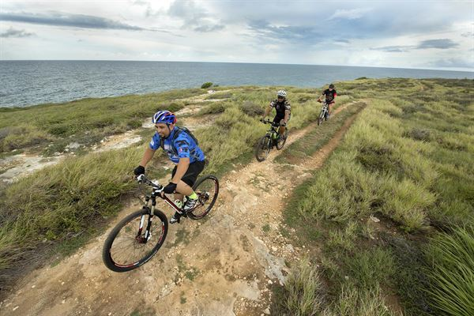
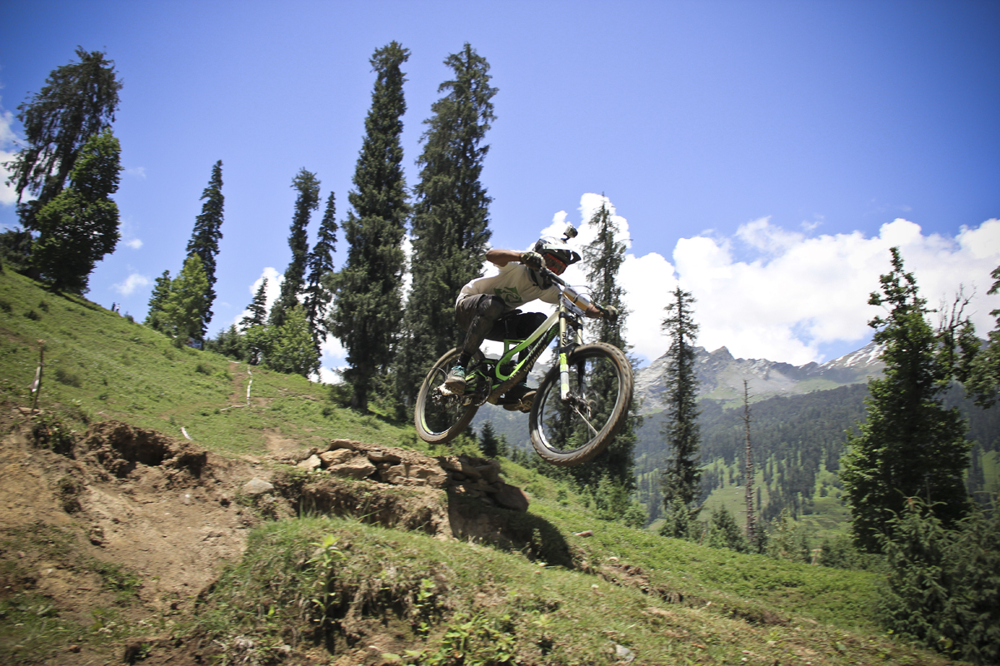

Mountain biking is strenuous and difficult for those involved. I am writing a haphazard sentence about mountain biking for class. Mountain biking is strenuous and difficult for those involved. I am writing a haphazard sentence about mountain biking for class. Mountain biking is strenuous and difficult for those involved. I am writing a haphazard sentence about mountain biking for class. Mountain biking is strenuous and difficult for those involved. I am writing a haphazard sentence about mountain biking for class. Mountain biking is strenuous and difficult for those involved. I am writing a haphazard sentence about mountain biking for class.
On the other hand, it can be pretty fun. Falling, however, is not. If you are going to mountain bike make sure you have first aid supplies.
Another fun aspect of the sport is acquiring a satisfying amount of speed. It will be fun for all involved, 11% guarunteed. Another fun aspect of the sport is acquiring a satisfying amount of speed. It will be fun for all involved, 11% guarunteed. Another fun aspect of the sport is acquiring a satisfying amount of speed. It will be fun for all involved, 11% guarunteed. Another fun aspect of the sport is acquiring a satisfying amount of speed. It will be fun for all involved, 11% guarunteed. Another fun aspect of the sport is acquiring a satisfying amount of speed. It will be fun for all involved, 11% guarunteed.
There are some fun techniques mountain bikers should try in order to enhance their experience.
the first is the tailslide or skid. Get a good amount of speed going before pulling the back brake and turning the wheel. You will want to wear a helmet.
the second is the reverse wheelie. Simply tap the front brake and lean forward while traveling at a slow speed.
Another is the wheelie. Start by going slow, then pedaling fast and leaning back to get on the back wheel.